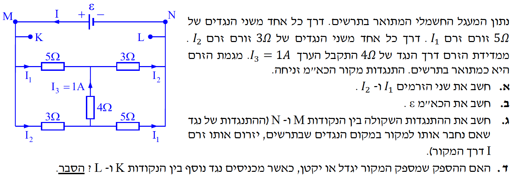

פתרון בגרות חשמל 1997 שאלה 2
מעגלי זרם ישר
ver
vAUTO
|
auto

[תמונת השאלה המקורית]
לא נמצאה תמונה בשם question-image.png באותה תיקייה.
מה נתון:
- התנגדויות: נתונות באוהם. יש שני נגדים של \(5\Omega\), שני נגדים של \(3\Omega\), ונגד אמצעי של \(4\Omega\).
- הזרם בנגד האמצעי: \(I_3 = 1A\), כיוונו מוגדר כלפי מעלה בשרטוט.
- מקור המתח: למקור יש התנגדות פנימית זניחה, לכן \(r = 0\Omega\).
- סימטריה במעגל: הזרם בנגד \(5\Omega\) השמאלי העליון שווה לזרם בנגד \(5\Omega\) הימני התחתון. נסמן \(I_1\). בנוסף, הזרם בנגד \(3\Omega\) השמאלי התחתון שווה לזרם בנגד \(3\Omega\) הימני העליון. נסמן \(I_2\).
מה מחפשים: את \(I_1\) ו־\(I_2\).
נוסחאות בשימוש:
\( \Sigma I = 0 \)
\( \Sigma \varepsilon = \Sigma IR \)
פתרון:
מצומת תחתון: \[ I_2 = I_1 + I_3 = I_1 + 1 \]
מלולאה שמאלית: \[ -5I_1 + 4(1) + 3I_2 = 0 \]
הצבה: \[ -5I_1 + 4 + 3(I_1+1) = 0 \]
\[ -2I_1 + 7 = 0 \implies I_1 = 3.5A \]
\[ I_2 = I_1 + 1 = 4.5A \]
תשובה סופית לסעיף א': \(I_1 = 3.5A\), \(I_2 = 4.5A\).
מה נתון: \(I_1 = 3.5A\), \(I_2 = 4.5A\), \(r=0\).
מה מחפשים: את \(\varepsilon\).
נוסחה בשימוש:
\( V_{ab} = \varepsilon - Ir \)
פתרון:
מאחר ש־\(r=0\): \(V_{MN}=\varepsilon\).
\[ \varepsilon = I_1\cdot5 + I_2\cdot3 \]
\[ \varepsilon = 3.5\cdot5 + 4.5\cdot3 = 17.5 + 13.5 = 31V \]
תשובה סופית לסעיף ב': \(\varepsilon = 31V\).
מה נתון: \(V_{MN}=31V\), \(I_1=3.5A\), \(I_2=4.5A\).
מה מחפשים: את \(R_{eq}\).
נוסחה בשימוש:
\( V = RI \)
פתרון:
\[ I_{total} = I_1 + I_2 = 8A \]
\[ R_{eq} = \frac{V_{MN}}{I_{total}} = \frac{31}{8} = 3.875\Omega \]
תשובה סופית לסעיף ג': \(R_{MN}=3.875\Omega\).
מה נתון: מחברים נגד חדש בין K ו־L, ו־\(r=0\).
מה מחפשים: האם הספק המקור \(P\) גדל או קטן.
נוסחה בשימוש:
\( P = V_{ab}I \)
הסבר: חיבור נגד נוסף במקביל מקטין את ההתנגדות השקולה, ולכן הזרם הכולל גדל. מאחר ש־\(V_{ab}\) קבוע (כי \(r=0\)), נקבל שההספק גדל.
תשובה סופית לסעיף ד': ההספק שמספק המקור יגדל.